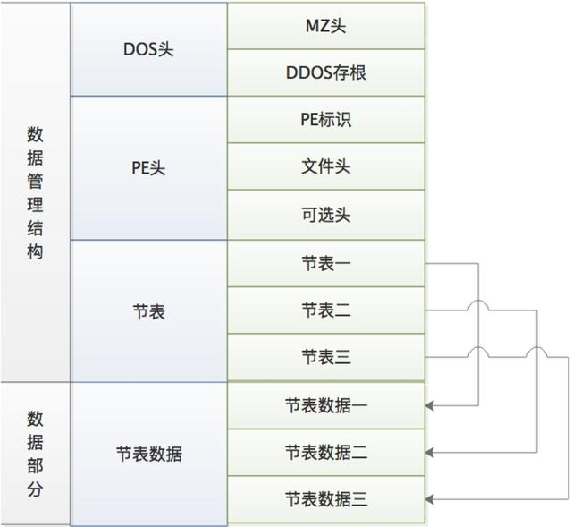

PE 结构简述
PE 简介
PE 文件的全称是 Portable Executable ，意为可移植的可执行的文件，常见的 EXE、DLL、OCX、SYS、COM 都是 PE 文件，PE 文件是微软 Windows 操作系统上的程序文件（可能是间接被执行，如 DLL ）。
PE 结构概述
PE 文件大致可以分为两部分，即数据管理结构及数据部分。
- 数据管理结构包含：DOS 头、PE 头、节表。
- 数据部分包括：节表数据（节表数据是包含着代码、数据等内容）。

数据管理结构
01 DOS 头
所有的 PE 文件都是以一个 64 字节的 DOS 程序开始。当 PE 文件在 DOS 下执行时，DOS 可以识别出这是一个有效的执行体，然后运行 DOS Stub 。这个 DOS 头只是为了兼容早期的 DOS 操作系统。不需要详细了解。
DOS HEADER 和 DOS Stub 合称为 DOS 文件头。
PE 文件前 0x40 个字节是一个传统的 DOS 头，结构为 IMAGE_DOS_HEADER 。如果在 DOS 中执行文件，则会调用存根程序（DOS Stub）。 它通常显示合适的消息；但是，任何有效的 DOS 应用程序都可以是存根程序。
winn.h 中定义:
#define IMAGE_DOS_SIGNATURE 0x5A4D // MZ
typedef struct _IMAGE_DOS_HEADER { // DOS .EXE header
WORD e_magic; // Magic number
WORD e_cblp; // Bytes on last page of file
WORD e_cp; // Pages in file
WORD e_crlc; // Relocations
WORD e_cparhdr; // Size of header in paragraphs
WORD e_minalloc; // Minimum extra paragraphs needed
WORD e_maxalloc; // Maximum extra paragraphs needed
WORD e_ss; // Initial (relative) SS value
WORD e_sp; // Initial SP value
WORD e_csum; // Checksum
WORD e_ip; // Initial IP value
WORD e_cs; // Initial (relative) CS value
WORD e_lfarlc; // File address of relocation table
WORD e_ovno; // Overlay number
WORD e_res[4]; // Reserved words
WORD e_oemid; // OEM identifier (for e_oeminfo)
WORD e_oeminfo; // OEM information; e_oemid specific
WORD e_res2[10]; // Reserved words
LONG e_lfanew; // File address of new exe header
} IMAGE_DOS_HEADER, *PIMAGE_DOS_HEADER;
重要字段:
- e_magic -> DOS 头的标识，为
0x4D和0x5A。分别为字母MZ。 - e_lfanew -> 一个双字数据，为 exe 头的文件地址。 Windows 加载器通过它可以跳过 DOS Stub 部分直接找到 PE 头。
DOS 头后跟一个 DOS Stub 数据，是链接器链接执行文件的时候加入的部分数据，一般是“This program cannot be run in DOS mode.”。这个可以通过修改链接器的设置来修改成自己定义的数据。
02 PE 头（NT 头）结构
PE 头分为三个部分，分别是 PE 标识（IMAGE_NT_SIGNATRUE）、映像文件头（IMAGE_FILE_HEADER）、可选映像头（IMAHE_OPTION_HEADER）。PE 头是固定不变的，位于 DOS 头部中 e_ifanew 字段指出位置。
//x86
typedef struct _IMAGE_NT_HEADERS {
DWORD Signature;
IMAGE_FILE_HEADER FileHeader;
IMAGE_OPTIONAL_HEADER32 OptionalHeader;
} IMAGE_NT_HEADERS32, *PIMAGE_NT_HEADERS32;
//x64
typedef struct _IMAGE_NT_HEADERS {
DWORD Signature;
IMAGE_FILE_HEADER FileHeader;
IMAGE_OPTIONAL_HEADER64 OptionalHeader;
} IMAGE_NT_HEADERS64, *PIMAGE_NT_HEADERS64;
其中，Signature 为 0x00004550 ，即字符串 "PE\0\0"
接下来是 映像文件头（FileHeader）：
typedef struct _IMAGE_FILE_HEADER {
WORD Machine; // 运行平台，cpu类型
WORD NumberOfSections; // 文件的区块数（SectionTable 项的数量）
DWORD TimeDateStamp; // 时间戳，文件创建日期与时间
DWORD PointerToSymbolTable; // 指向符号表（用于调试）
DWORD NumberOfSymbols; // 符号表中符号的个数（用于调试）
WORD SizeOfOptionalHeader; // IMAGE_OPTIONAL_HEADER 结构大小
WORD Characteristics; // 文件属性
} IMAGE_FILE_HEADER, *PIMAGE_FILE_HEADER;
重要字段：
- NumberOfSections：定义 PE 文件 Section 的个数。如果对 PE 文件新增或删除 Section 的话，一定要记的修改此域。
- SizeOfOptionalHeader：定义 OptionHeader 结构的大小。
- Characteristics：主要用来标识当前的 PE 文件是执行文件还是 DLL 。其各位都有具体的含义。
其中 Characteristics 字段：
| 宏定义 | 值 | 意义 |
|---|---|---|
| IMAGE_FILE_RELOCS_STRIPPED | 0x0001 |
文件中不存在重定位信息 |
| IMAGE_FILE_EXECUTABLE_IMAGE | 0x0002 |
文件是可执行的 |
| IMAGE_FILE_LINE_NUMS_STRIPPED | 0x0004 |
不存在行信息 |
| IMAGE_FILE_LOCAL_SYMS_STRIPPED | 0x0008 |
不存在符号信息 |
| IMAGE_FILE_BYTES_REVERSED_LO | 小尾方式 | |
| IMAGE_FILE_32BIT_MACHINE | 0x0100 |
只在 32 位平台运行 |
| IMAGE_FILE_DEBUG_STRIPPED | 不包含调试信息 | |
| IMAGE_FILE_REMOVABLE_RUN_FROM_SWAP | 不能从可移动盘运行 | |
| IMAGE_FILE_NET_RUN_FROM_SWAP | 不能从网络运行 | |
| IMAGE_FILE_SYSTEM | 0x2000 |
系统文件。不能直接运行 |
| IMAGE_FILE_DLL | 0x1000 |
DLL 文件 |
| IMAGE_FILE_UP_SYSTEM_ONLY | 文件不能在多处理器上运行 | |
| IMAGE_FILE_BYTES_REVERSED_HI | 大尾方式 |
接着是 可选映像头（OptionalHeader）
//x86
typedef struct _IMAGE_OPTIONAL_HEADER {
//
// Standard fields.
//
WORD Magic; //标志字
BYTE MajorLinkerVersion; //链接器主版本号
BYTE MinorLinkerVersion; //链接器次版本号
DWORD SizeOfCode; //所有含有代码的区块大小*
DWORD SizeOfInitializedData; //所有初始化数据区块的大小
DWORD SizeOfUninitializedData;//所有未初始化数据区块的大小
DWORD AddressOfEntryPoint; //程序执行入口 RVA*
DWORD BaseOfCode; //代码区块起始 RVA*
DWORD BaseOfData; //数据区块起始 RVA
//
// NT additional fields.
//
DWORD ImageBase; //程序默认载入基址*
DWORD SectionAlignment; //内存中区块的对齐值*
DWORD FileAlignment; //文件中区块的对齐值*
WORD MajorOperatingSystemVersion; //操作系统主版本号
WORD MinorOperatingSystemVersion; //操作系统次版本号
WORD MajorImageVersion; //用户自定义主版本号
WORD MinorImageVersion; //用户自定义次版本号
WORD MajorSubsystemVersion; //所需子系统主版本号
WORD MinorSubsystemVersion; //所需子系统次版本号
DWORD Win32VersionValue; //保留，通常被设置为 0
DWORD SizeOfImage; //映像载入内存后的总尺寸*
DWORD SizeOfHeaders; //DOS 头、PE 文件头、区块表总大小*
DWORD CheckSum; //映像校验和
WORD Subsystem; //文件子系统
WORD DllCharacteristics; //显示 DLL 特性的旗标
DWORD SizeOfStackReserve; //初始化时栈的大小*
DWORD SizeOfStackCommit; //初始化时实际提交栈的大小*
DWORD SizeOfHeapReserve; //初始化时保留堆的大小*
DWORD SizeOfHeapCommit; //初始化时实际保留堆的大小*
DWORD LoaderFlags; //与调试相关，默认值为0
DWORD NumberOfRvaAndSizes; //数据目录表的项数*
IMAGE_DATA_DIRECTORY DataDirectory[IMAGE_NUMBEROF_DIRECTORY_ENTRIES];
} IMAGE_OPTIONAL_HEADER32, *PIMAGE_OPTIONAL_HEADER32;
//x64
typedef struct _IMAGE_OPTIONAL_HEADER64 {
//
// Standard fields.
//
WORD Magic;
BYTE MajorLinkerVersion;
BYTE MinorLinkerVersion;
DWORD SizeOfCode;
DWORD SizeOfInitializedData;
DWORD SizeOfUninitializedData;
DWORD AddressOfEntryPoint;
DWORD BaseOfCode;
//
// NT additional fields.
//
ULONGLONG ImageBase;
DWORD SectionAlignment;
DWORD FileAlignment;
WORD MajorOperatingSystemVersion;
WORD MinorOperatingSystemVersion;
WORD MajorImageVersion;
WORD MinorImageVersion;
WORD MajorSubsystemVersion;
WORD MinorSubsystemVersion;
DWORD Win32VersionValue;
DWORD SizeOfImage;
DWORD SizeOfHeaders;
DWORD CheckSum;
WORD Subsystem;
WORD DllCharacteristics;
ULONGLONG SizeOfStackReserve;
ULONGLONG SizeOfStackCommit;
ULONGLONG SizeOfHeapReserve;
ULONGLONG SizeOfHeapCommit;
DWORD LoaderFlags;
DWORD NumberOfRvaAndSizes;
IMAGE_DATA_DIRECTORY DataDirectory[IMAGE_NUMBEROF_DIRECTORY_ENTRIES];
} IMAGE_OPTIONAL_HEADER64, *PIMAGE_OPTIONAL_HEADER64;
对比 winnt.h 中定义的 32 位 PE 文件头与 64 位 PE 文件头，可以发现两者的区别在 IMAGE_OPTIONAL_HEADER ，其中有 6 处不同（以 64 位 PE 文件头说明）：
- 移除了
DWORD BaseOfData字段 - 以下 5 个字段类型由
DWORD更改为了ULONGLONG
ULONGLONG ImageBase;
ULONGLONG SizeOfStackReserve;
ULONGLONG SizeOfStackCommit;
ULONGLONG SizeOfHeapReserve;
ULONGLONG SizeOfHeapCommit;
重要字段：
- SizeOfCode：有 IMAGE_SCN_NT_CODE 属性的区块的总大小，该字段与 .text 块的大小匹配
-
AddressOfEntryPoint：程序执行入口 RVA
注：RVA 相对虚拟偏移
对于 DLL ，这个入口点在进程初始化和关闭时及线程创建和结束时被调用。在大多数可执行文件中，这个地址不直接指向 Main、WinMain 或 DllMain 函数，而指向运行时的库代码（ntdll_RtlUserThreadStart）并由它来调用上述函数。在 DLL 中，链接器的 /NOENTRY 开关可以设置这个域为 0 。
-
BaseOfCode：代码段的起始 RVA 。代码段通常位于PE文件头之后,数据块之前
-
ImageBase：
文件在内存中的首选载入地址。如果有可能（也就是说，如果目前没有其他文件占据这块地址，它就是正确对齐的并且是一个合法的地址），加载器会试图在这个地址载入 PE 文件。
如果 PE 文件是在这个地址载入的，那么加载器将跳过应用基址重定位的步骤。如果该地址被占用，加载器会选用其它地址作为载入地址，然后执行应用基址重定位的步骤
-
SectionAlignment：载入内存时的区块对齐大小 / 内存中区块的对齐大小。最小对齐尺寸为每页
0x1000 (4kb)。 - FileAlignment：磁盘上 PE 文件的区块对齐大小。该值为 2 的幂，且最小值为
0x200(512b)。 - SizeOfImage：映像载入内存后的总尺寸。
- SizeOfHeaders：DOS 头、PE 文件头、区块表的总尺寸
- SizeOfStackReserve：在 EXE 文件里为线程保留的栈的大小
- SizeOfStackCommit：在 EXE 文件里，一开始即被委派给栈的内存，默认值为
0x1000(4kb) - SizeOfHeapReserve：在 EXE 文件里，为进程默认堆保留的内存，默认值为
0x100000(1MB) - SizeOfHeapCommit：在 EXE 文件里，委派给堆的内存，默认值
0x1000(4kb) - CheckSum：映像的校验和。IMACEHLP.DLL 中的
CheckSumMappedFile函数可以计算该值。一般的 EXE 文件该值可以是 0 ，但一些内核模式的驱动程序和系统 DLL 必须有一个校验和。当链接器的/RELEASE开关被使用时，校验和被置于文件中。
最后 128 个字节为数据目录（Data Directory）。它由 16 个IMAGE_DATA_DIRECTORY 结构组成的数组构成，指向输出表、输入表、资源块、重定位等数据目录项的 RVA（相对虚拟地址）和大小。
typedef struct _IMAGE_DATA_DIRECTORY {
DWORD VirtualAddress; //数据块的起始 RVA
DWORD Size; //数据块的长度
} IMAGE_DATA_DIRECTORY, *PIMAGE_DATA_DIRECTORY;
数据目录项是可选的，并不是所有的数据目录项都会有值。数据目录项包括：输入表、输出表、资源、例外、安全、重定位、调试、版权、全局指针、Tls 表、载入配制、输入范围、IAT、延迟输入、COM、保留 共十六个项。
03 节表（区块表）
在 PE 文件头与原始数据之间存在一个区块表（Section Table），它是一个 IMAGE_SECTION_HEADER 结构数组，区块表包含每个块在映像中的信息（如位置、长度、属性），分别指向不同的区块实体。
typedef struct _IMAGE_SECTION_HEADER {
Name //8 个字节的块名
union
{
DWORD PhysicalAddress;
DWORD VirtualSize;
} Misc; //区块尺寸
DWORD VirtualAddress //区块的 RVA 地址
DWORD SizeOfRawData; //在文件中对齐后的尺寸
DWORD PointerToRawData; //在文件中偏移
DWORD PointerToRelocations; //在 OBJ 文件中使用，重定位的偏移
DWORD PointerToLinenumbers; //行号表的偏移（供调试使用地）
WORD NumberOfRelocations; //在 OBJ 文件中使用，重定位项数目
WORD NumberOfLinenumbers; //行号表中行号的数目
DWORD Characteristics; //区块属性，如可读，可写，可执行等
} IMAGE_SECTION_HEADER, *PIMAGE_SECTION_HEADER;
一个 PE 文件至少需要两个 Section ，一个是存放代码，一个存放数据。NT 上的 PE 文件基本上有 9 个预定义的 Section 。分别是：.text ，.bss ，.rdata ，.data ，.rsrc ，.edata ，.idata ，.pdata 和 .debug 。一些 PE 文件中只需要其中的一部分区块。
重要字段：
-
Name：块名，这是一个 8 位 ASCII 码名，用来定义块名。多数块名以一个 "." 开始（如 .text），尽管许多 PE 文档都认为这个 "." 实际上并不是必须的。值得注意的是，如果块名超过 8 位，则最后的 NULL 不存在。带有一个 "$" 的区块名字会从链接器那里得到特殊的对待，前面带 "$" 的相同名字的区块被合并，在合并后的区块中它们是按 "$" 后面的字符字母顺序进行合并的。
常见区块与区块合并
名称 描述 .text 默认的代码区块，它的内容全是指令代码。PE 文件运行在 32 位方式下，不受 16 位段的约束，所以没有理由把代码放到不同的区块中。链接器把所有目标文件的 .text 块链接成一个大的 .text 块。如果使用 Borland C++ ，其编译器将产生的代码存储于名为 code 的区域，其链接器链接的结果是使代码块的名称不是 .text ，而是 code .data 磨人的读 / 写数据区块。全局变量，静态变量一般放在这里。 .rdata 默认的只读数据区块，但程序很少用到该块中的数据，至少有两种情况要用到 .rdata 块。一是在 Microsoft 链接器产生的 EXE 文件中，用于存放调试目录；二是用于存放说明字符串。如果程序的 DEF 文件中指定了 DESCRIPTION . 字符串就会出现在 .rdata 块中 .idata 包含其他外来 DLL 的函数及数据信息，即输入表。将 .idata 区块合并到另一个区块已成为惯例，典型的是 .rdata 区块。链接器默认仅在创建一个 Release 模式的可执行文件时才将 .idata 区块合并到另一个区块中 .edata 输出表。当创建一个输出 API 或数据的可执行文件时，链接器会创建一个 .EXP 文件，这个 .EXP 文件包含一个 .edata 区块，它会被加入最后的可执行文件中。与 .idata 区块一样，.edata 区块也经常被发现合并到了 .text 或 .tdata 区块中 .rsrc 资源，包括模块的全部资源，例如图标、菜单、位图等。这个区块是只读的，无论如何都不应该命名为 .rsrc 以外的名字，也不能被合并到其他区块里 .bss 未初始化数据。很少使用，取而代之的是执行文件的 .data 区块的 VirtualSize 被扩展到足够大以存放未初始化的数据 .crt 用于支持 C++ 运行时（CRT）所添加的数据 .tls TLS 的意思是线程局部存储器，用于支持通过 __declspec（thread）声明的线程局部存储变量的数据，既包括数据的初始化值，也包括运行时所需要的额外变量。 .reloc 可执行文件的基址重定位。基址重定位一般只是 DLL 需要，而不是 EXE 需要。在 Release 模式下，链接器不会给 EXE 文件加上基址重定位，重定位可以在链接时通过 /FIXED 开关关闭 .sdata 相对于全局指针的可被定位的“短的”读/写数据，用于 IA-64 和其他使用一个全局指针寄存器的体系结构。IA-64 上的常规大小的全局变量放在这个区块里 .srdata 相对于全局指针的可被定义的“短的”只读数据，用于 IA-64 和其他使用一个全局指针寄存器的体系结构。 .pdata 异常表，包含一个 CPU 特定的 IMAGE_RUNTIME_FUNCTION_ENTRY 结构数组，DataDirectory 中的 IMAGE_DIRECTORY_ENTRY_EXCEPTION 指向它。它用于异常处理，是基于表的体系结构，就像 IA-64 。唯一不使用基于表的异常处理的架构体系是 x86 .debugSS OBJ 文件中 Codeview 格式的符号。这是一个变量长度的 Codeview 格式的符号记录流 .debugST OBJ 文件中 Codeview 格式的类型记录。这是一个变量长度的 Codeview 格式的类型记录流 .debugSP 当时用预编译的头时，可以在 OBJ 文件中找到它 .drectve 包含连接器命令，只能在 OBJ 中找到它。命令是能被传递给连接器命令行的字符串，例如“-defaultlib:LIBC”。命令用空格字符分开 .didat 延迟载入的输入数据，只能在非 Release 模式的可执行文件中找到。在 Release 模式下，延迟载入的数据会被合并到另一个区块中 可以通过声明，将数据插入自定义的区块，而不是默认的区块。
链接器的工作是合并所有 OBJ 和库中所有的块，使其最终成为一个合适的区块。OBJ 文件中还可以存在一个放置链接信息的区块，链接完即删除掉。
区块合并没有什么硬性规定，把 .rdata 合并到 .text 不会有什么问题。但不应将 .rsrc 、.reloc 或 .pdata 合并到其他区块里。
-
Misc.VirtualSize：指出实际的、被使用的区块大小。如果 VirtualSize 大于 SizeOfRawData ，那么 SizeOfRawData（来自于可执行文件初始化数据的大小）与 VirtualSize 相差的字节用
0填充。这个字段在 OBJ 文件中设为0。 - VirtualAddress：该块装载到内存中的 RVA 。这个地址是按照内存页对齐的，它的数值总是 SectionAlignment 的整数倍。在 MS 工具中，第一块的默认 RVA 为
0x1000。在 OBJ 中，该字段没意义。如果该值为0x1000，PE 文件被加载到0x400000，那么该 Section 的起始地址为0x401000。 - SizeOfRawData：该块在磁盘文件中所占的大小。在可执行文件中，这个值必须是 PE 头部指定的文件对齐大小的倍数。如果是
0，则说明区块中的数据是未初始化的。该块在磁盘文件中所占的大小，这个数值等于 VirtualSize 字段的值按照 FileAlignment 的值对齐以后的大小。例如，FileAlignment的大小为0x1000，如果 VirtualSize 中的块长度为0x2911，则 SizeOfRawData 为0x3000。 - PointerToRawData：该块在磁盘文件中的偏移。对于可执行文件，这个值必须是 PE 头部指定的文件对齐大小的倍数。
- PointerToRelocations：这部分在 EXE 文件中无意义。在 OBJ 文件中，表示本块重定位信息的偏移量。在 OBJ 文件中如果不是零，则会指向一个 IMAGE_RELOCATION 的数据结构。
- NumberOfRelocations：由 PointerToRelocations 指向的重定位的数目。
- NumberOfLinenumbers：由 NumberOfRelocations 指向的行号的数目，只在 COFF 样式的行号被指定时使用。
- Characteristics：块属性，该字段是一组指出块属性（如代码/数据/可读/可写等）的标志。多个标志值通过 OR 操作形成 Characteristics 的值。这些标志很多都可以通过链接器
/SECTION选项设置。
PE 文件常见的区块：
| 中文名 | 命名 |
|---|---|
| 执行代码段 | .text（Microsoft）/ CODE（Borland） |
| 数据段 | .data（全局变量等） / .rdata（只读数据） / .bss（Microsoft，未初始化的数据）/ DATA（Borland） |
| 资源段 | .rsrc（资源树的结构存放） |
| 导出表 | .edata |
| 导入表 | .idata |
| 调试信息段 | .debug |
注 1：.pdata 帮助在运行时进行堆栈遍历。此结构有助于调试和异常处理。
注 2：这些区块并不是都是必须的，当然，也可以根据需要定义更多的区块（比如一些加壳程序）。
数据部分——区块（节）
略
参考资料：
- pe文件 https://baike.baidu.com/item/pe%E6%96%87%E4%BB%B6/6488140
- PE Format https://learn.microsoft.com/en-us/windows/win32/debug/pe-format
- PE结构详解（加壳脱壳必备知识）https://blog.csdn.net/a59a59/article/details/103214936
- PE文件结构详解精华 https://blog.csdn.net/weixin_43655282/article/details/104291312
- 深入剖析PE文件 https://developer.aliyun.com/article/492435
- PDATA Structures (Windows CE 5.0) https://learn.microsoft.com/en-us/previous-versions/windows/embedded/aa448751(v=msdn.10)
- 加密与解密 - 11.2 MS-DOS头 https://blog.csdn.net/qq726232111/article/details/112568763
- 加密与解密 - 11.3 PE文件头 https://blog.csdn.net/qq726232111/article/details/112605738
- 第11章：PE 文件格式（补充） https://www.cnblogs.com/Rev-omi/p/14118993.html
- PE知识复习之PE的RVA与FOA的转换 https://www.lmlphp.com/user/56/article/item/87/

This work is licensed under a Creative Commons Attribution-NonCommercial-NoDerivatives 4.0 International License.